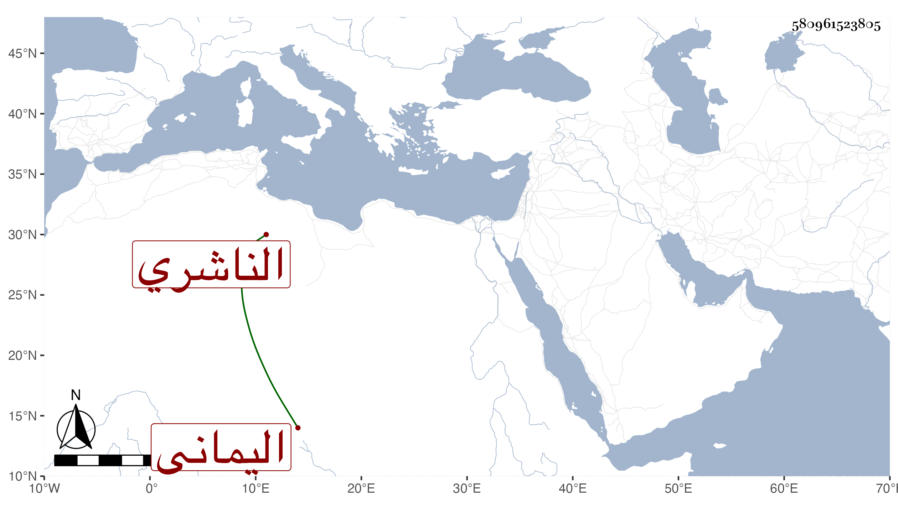

0902Sakhawi.DawLamic.ITO20230111-ara1.EIS1600.580961523805
Biography ID: 580961523805
308
أبو الخير بن أبي بكر محمد بن أبي بكر بن علي بن محمد بن أبي بكر بن عبد الله ابن عمر بن عبد الرحمن الناشري اليماني الماضي أبوه . مات في حياته سنة ثلاثين وكان حاضر الهمة قوي النفس مع ضعف البنية ذكره الناشري في أبيه .
